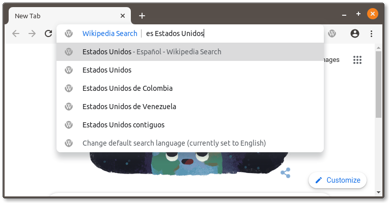
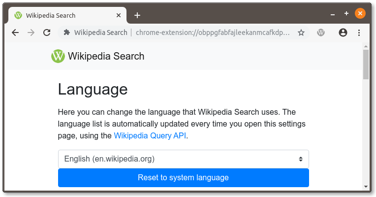

Wikipedia Search is a browser extension that adds a search function for Wikipedia to your browser’s address bar and right-click menu. It’s one of my oldest-running software projects, as it’s over eight years old at this point.
It has been over two years since the last major update, so I’m super happy to finally release Wikipedia Search 10!
The vast majority of the work on v10 has been under-the-hood. The codebase is much cleaner, settings are now stored in the chrome.storage API (which opens the door for cloud sync in the future), and all of Wikipedia Search’s dependencies have been updated to the latest versions.
The first visible feature in v10 is the improved address bar search. By popular demand, you can now type a Wikipedia prefix (”fr” for French, “es” for Spanish, and so on) before a search query and the search will switch to that language.

The settings page has also received an update. Not only are more languages available in v10 (all 300+ that Wikipedia supports), but the full list of Wikipedia is refreshed every time you open the settings page.

A few bugs have also been fixed. The extension no longer interferes with the textbox on the Wikipedia.org home page (#10), and special characters can be used in search (#16).
You can download Wikipedia Search on Chrome and Opera. Version 10 is still rolling out, so you might not get it right away. I’m hoping to publish it on the Firefox add-ons site soon.